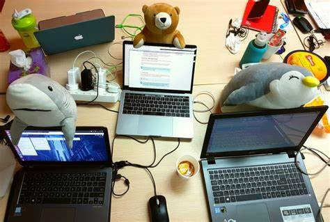

The joining the dots (JTD) Foundation had given life to us. It is The place to fill our dream job colorfull . We lost our confidence level when we were in college, because there was no sufficient facilities to get into job and survive. But when we are seeking for the help ,Suddenly one day JTD came to our college and have given chance to join into it. And jtd provided the laptops for each and everyone of us. They provided us whatever the facilities we need.
After completing our studies we completely focussed on coding , however we could not read thoroughly . So our foundation took one step forward and decided to run bootcamp where everyone can come and study in one place. There are nearly 20 members in our batch. Again in that there are sub groups. Our group has 4 members. Named by Pavani , Shireesha ,Bindhu ,Sumithra. We are enjoying everyday in our group with lot of fun and joy.

In our bootcamp, The days very memorable . Each and everyday is different and special when compared to the previous day. There will be some tasks and activities. Problem solving , Logical questions ,Web designing , Creating dynamic pages , and lot more. So we enjoying each every Activity with all feelings . Sometimes we will scare by seeing problems and feels happy when we solve the problems . Cry when we dont know the problems , like this all emotions are carried out in our bootcamp.
However , we have lot of support from our mentors. Wthout their help and support we are not succeed. They inspire us a lot and make more fun when we are sad. Our mentors energy is more than our energy. By seeing their energy we are pushing up ourselves. Their sweat and tears are kept behind us to put everyone of us together. Thus they have provided lot of facilities to see us in some position.
We are happy to work as team. And we charming in our team. So we are Charming Challengers.